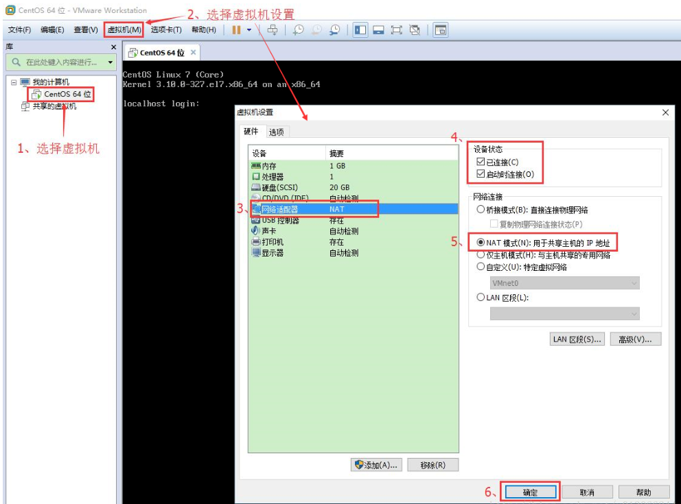
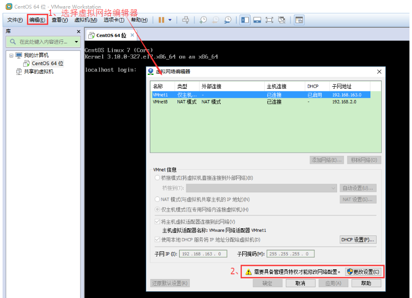
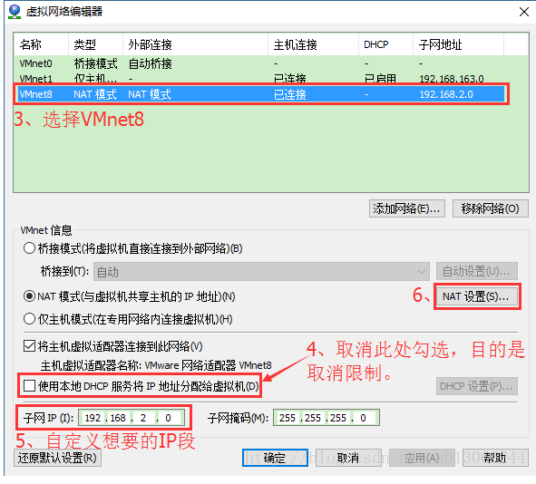
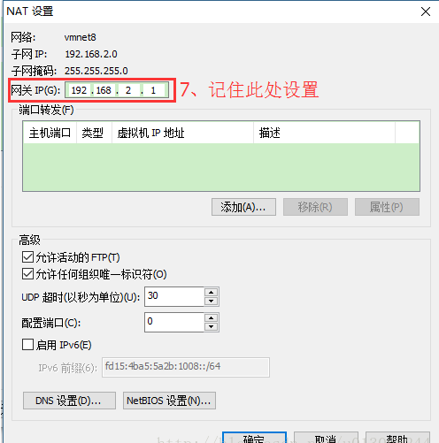
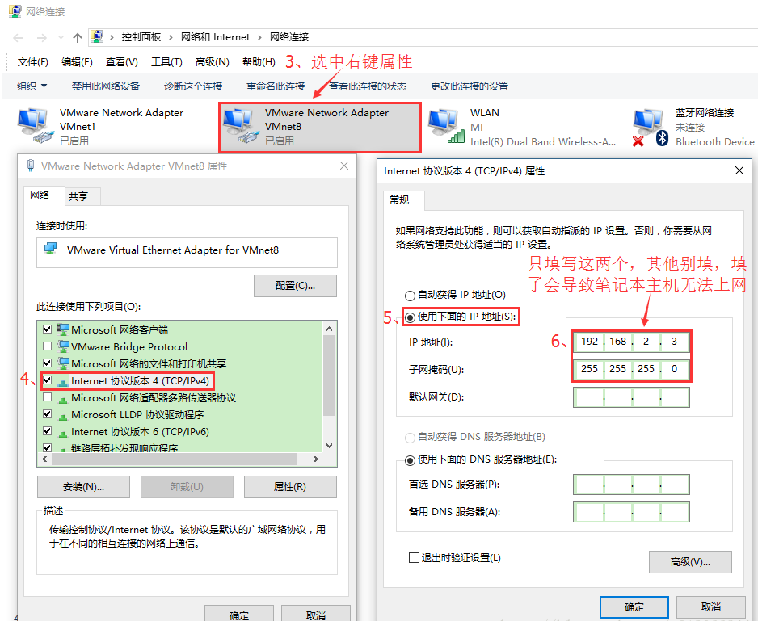
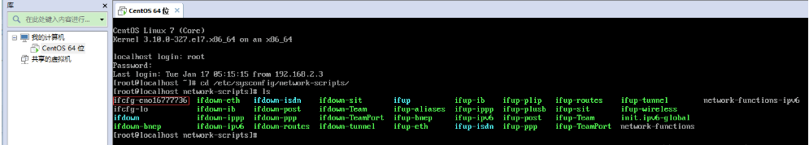
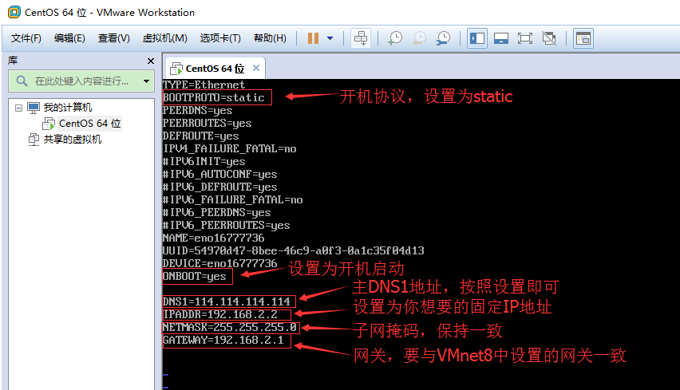
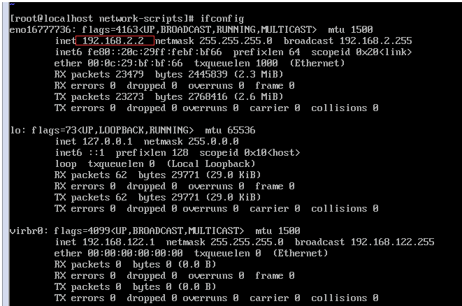

镜像下载
华为云镜像下载CentOS镜像，镜像使用 CentOS-7-x86_64-Minimal-2207-02.iso
镜像下载
VMware创建虚拟机
版本：VMware® Workstation 16 Pro
步骤忽略，选中镜像，一直点击下一步就可以
设置固定IP
虚拟机网络连接方式

配置虚拟机的NAT模式具体地址参数

选择VMnet8–取消勾选使用本地DHCP–设置子网IP–网关IP设置（记住此处设置，后面要用到），如下图

说明：修改子网IP设置，实现自由设置固定IP，IP网段最后一位0-255，子网IP占用一位，网关IP占用一位，剩余的都可以自由分配
若你想设置固定IP为192.168.2.2-255，比如192.168.2.2，则子网IP为192.168.2.0；
若你想设置固定IP为192.168.1.2-255，比如192.168.1.2，则子网IP为192.168.1.0；
也就是说，你想配置成哪个网段，IP地址最后那位为0即可。
记录一下上面的网关地址，虚拟机中设置固定IP时需要用到，这里的网关IP也可以自行设置，只要网段一致即可。

配置电脑具体VMnet8本地地址参数
会自动配置VMnet8的IP以及子网掩码，此处记录一下需要知晓本地电脑在局域网的IP

虚拟机设置固定IP
编辑网络
cd /etc/sysconfig/network-scripts
ls
vi ifconfig-ens33

说明：
BOOTPROTO=static #网络配置，设置为静态IP，有dhcp及static
ONBOOT=yes #设置为开机启动
DNS1=114.114.114.114 #这个是国内的DNS地址，是固定的
IPADDR=192.168.2.3 #你想要设置的固定IP，除VMware配置的子网IP、网关IP以及VMnet8设置的3个IP外，同网段 0-255之间都可以，自行设置
NETMASK=255.255.255.0 #子网掩码
GATEWAY=192.168.2.2 #网关IPork restart重启网络服务
service network restart验证
查看linux中的ip地址
ip addr
访问互联网，是否能正常访问
ping www.baidu.com实体机访问虚拟机IP，是否能正常访问
ping 192.168.2.2设置yum源为阿里云
下载阿里云CentOS 7的文件，替换虚拟机中的 /etc/yum.repos.d/CentOS-Base.repo 文件内容
或者直接使用wget下载文件直接进行替换
[root@localhost ~]# cd /etc/yum.repos.d
## 备份原文件
[root@localhost ~]# mv CentOS-Base.repo CentOS-Base_bak.repo
## 下载阿里云的镜像描述文件
[root@localhost ~]#
wget https://mirrors.aliyun.com/repo/Centos-7.repo -O CentOS-Base.repo执行以下命令
yum clean all
yum makecache
yum update 关闭防火墙
## 停止防火墙服务
[root@localhost ~]# systemctl stop firewalld.service
## 查看防火墙服务状态
[root@localhost ~]# systemctl status firewalld.service
## 永久关闭防火墙服务
[root@localhost ~]# systemctl disable firewalld.service